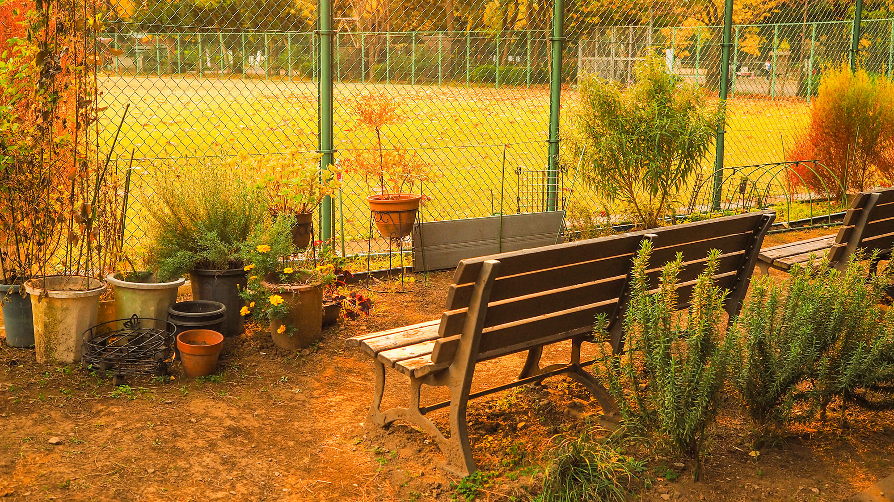
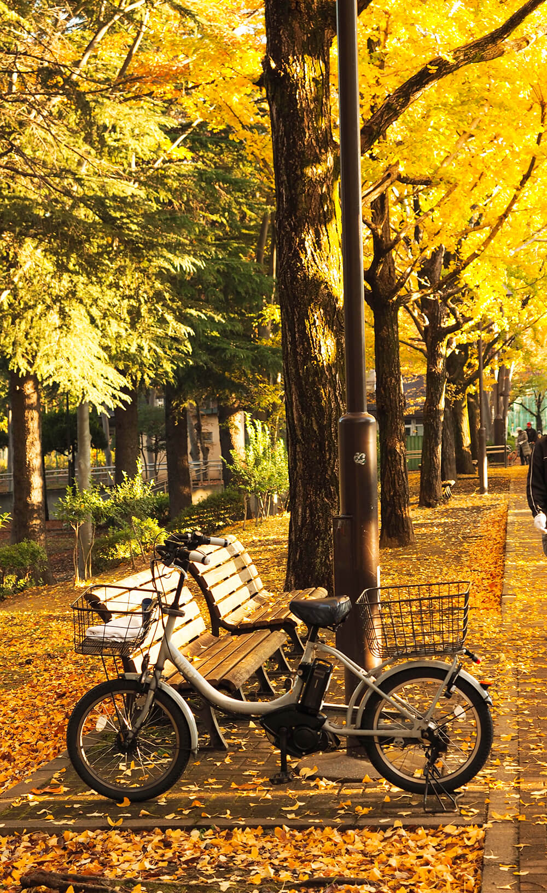
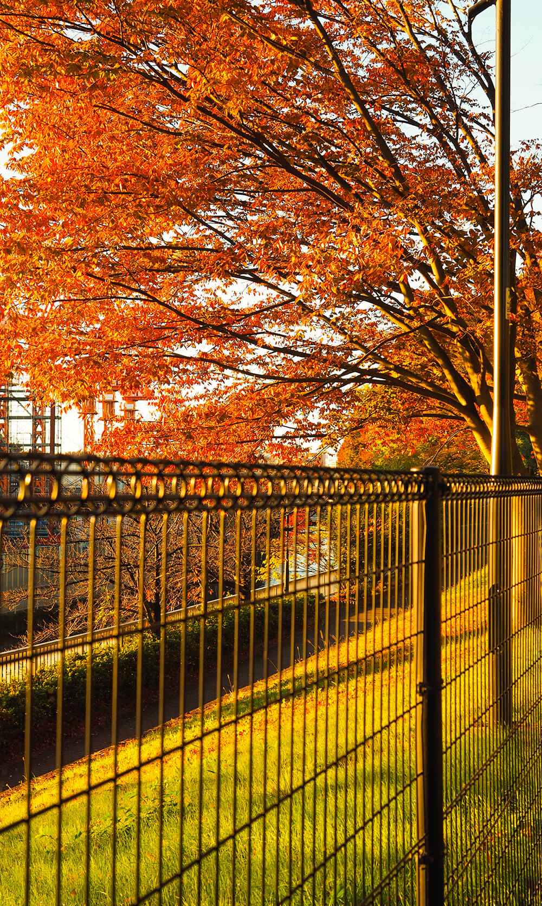
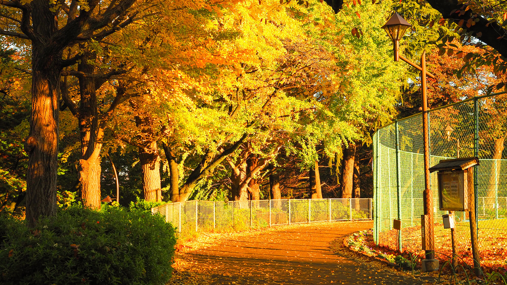

Waking up early, I walked out for fresh air (mostly to burn off extra calories from overeating the night before).
I did not burn any calories because I stopped to admire this jaw-dropping auburn scene.



